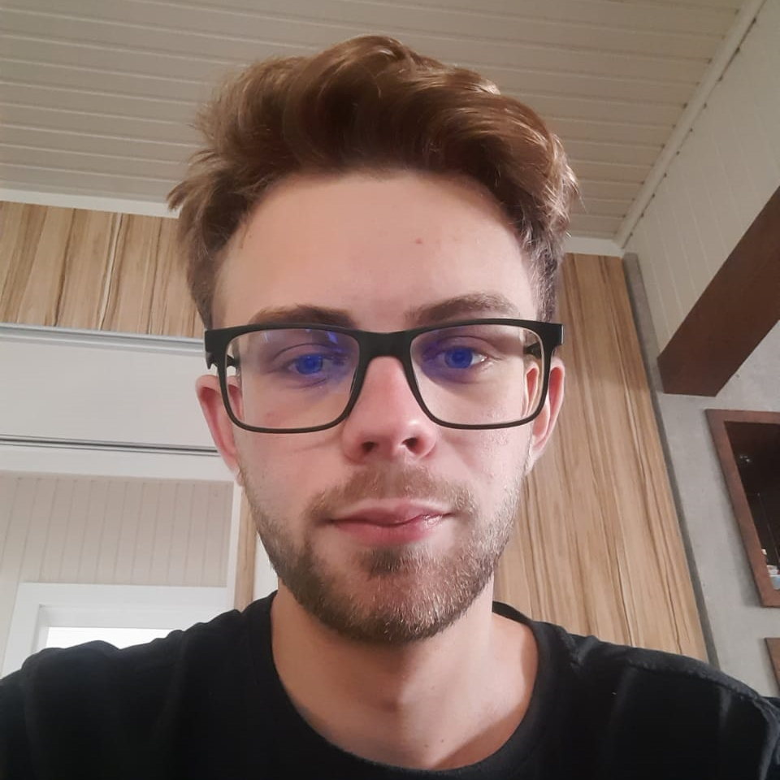

Seja bem vindo(a), eu sou Eduardo Vidal Viero
Desenvolvedor FullStack - Javascript - React - NodeJs - PostgreSQL
Um pouco sobre mim
Sempre gostei de tecnologia, computadores, vídeo games e também da área da aviação. Sou movido pela curiosidade e pelo desejo constante de aprender e explorar as últimas tendências do mundo digital. Atualmente estou cursando Análise de Desenvolvimento de Sistemas na UNINTER - Caçador-SC e finalizei o curso Fullstack JavaScript da OneBitCode. Antes de ingressar na área de Tecnologia da Informação, realizei o curso para me tornar piloto de avião, no Aeroclube de Blumenau, porém decidi mudar de área depois de um tempo. Sou um colaborador proativo e motivado, capaz de trabalhar tanto de forma independente quanto em equipe.
Hobbies
Nas horas vagas gosto de jogar vídeo games, assistir filmes e séries, ler livros e ouvir música. Também gosto de praticar esportes, como futebol, vôlei e natação. Sou um entusiasta da aviação e gosto de estudar sobre o assunto. Também gosto de viajar e conhecer novos lugares e culturas.